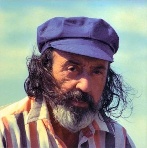
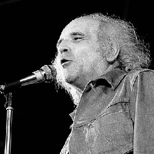

Le temps du tango
En guise d'introduction
Paroles de Jean-Roger Caussimon et musique de Léo Ferré (1958)
|
|
|
(1)
Jean-Roger Caussimon
est un auteur-compositeur-interprète et acteur français, né le 24 juillet 1918 dans le 14e arrondissement de Paris et mort le 20 octobre 1985 dans le 13e arrondissement. Il fut comédien (Lapin Agile, Trois-Baudets, Théâtre de l'Atelier, Théâtre de la Cité), acteur de cinéma, de télévision, de radio.Il fut le parolier privilégié de Léo Ferré à partir de 1947.
Son oeuvre poétique comprend entre autres 45 textes publiés en 1967 chez Seghers dans la collection « Poètes d'aujourd'hui ». Entre 1970 et 1985 il enregistre chez Pierre Barouh une quarantaine de chansons. De sa collaboration avec Léo Ferré est sortie une vingtaine de chansons dont le "Temps du Tango". |
(2)
Léo Ferré
, né le 24 août 1916 à Monaco et mort le 14 juillet 1993 à Castellina in Chianti (Toscane, Italie), est un auteur-compositeur-interprète, pianiste et poète monégasque.
Ayant réalisé plus d'une quarantaine d'albums originaux couvrant une période d'activité de 46 ans, de culture musicale classique, il dirige également à plusieurs reprises des orchestres symphoniques, en public ou à l'occasion d'enregistrements discographiques. Léo Ferré se revendiquait anarchiste et ce courant de pensée inspire grandement son uvre. En 1972, il rencontra Glenmor, un auteur-compositeur-interprète, écrivain et poète de langues française et bretonne, engagé dans la défense de l'identité bretonne. Ce faisant, il souhaitait découvrir l« homme qui dit que la France nexiste pas». Ils tournèrent tous les deux en Bretagne à l'occasion de cette rencontre. Ferré est considéré comme un poète marquant de la deuxième moitié du xxe siècle, avec une expression riche et profonde, |
|
 |
 |